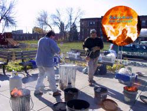
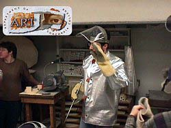
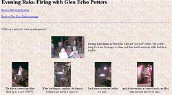
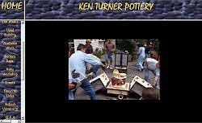
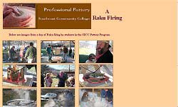
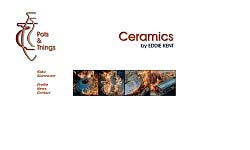

| Raku
Firing on the Web
by Helen Bates
Article originally published by Pottery
Making Illustrated, a publication of The
American Ceramic Society. Please also visit Helen Bates's column
PMI Online.
One of the most popular activities for ceramists of all levels
is raku firing. This ancient Japanese technique has been adapted
to uses quite different from its original purpose as a quick method
for firing disposable tea bowls for use during the Japanese tea
ceremony. There are plenty of sites on the 'Net that have wonderful
raku pieces, but for now, we'll just point out the sites with kiln
plans or kiln firings.
Tony Ferguson (Duluth, MN, USA)
http://www.aquariusartgallery.com/
Tony
offers two pages of building
directions for portable updraft raku kilns. Each page
has 15-20 thumbnail photos you can enlarge to excellent full-size
images. The first page contains the directions for the "Portable
Side Hole Updraft Raku Kiln"; the second has the pictures
and directions for "Fergy's Portable Outdoor Fire Place Updraft
Raku Kiln." This is an extensive site with several potters
represented. The various gallery pages have links to images
that can be "swapped" for one another on the page. This feature
is best viewed in Internet Explorer, but can be viewed in
older Netscape browsers but not at this time in the newest
browser versions from Netscape. To navigate to the Raku pages
from the home page, click on the "Aquarius Art Gallery" image;
click on the bowl image above the name "Tony Ferguson," and
click on the menu item "Raku Kilns." Scroll down this page
and click on the link for the second kiln page.
|
Concordia College (Moorhead, MN, USA)
http://www.cord.edu/dept/art/
Assistant
Professor Ross Hilgers appears to have a well-equipped and
tightly-run ceramics facility. You may view a series of images
of students wearing full safety clothing and helmets for a
school raku firing. While viewing the page, scroll all the
way down to see a bowl decorated with a lovely Soldner halo
effect. From the art department home page, scroll down to
click on "Studio Areas," "Ceramics," and "Sequence of photos
of a raku firing." While visiting the site, don't neglect
the rest of the Ceramics area links.
|
Glen Echo Park (National Parks Service) (Glen Echo, MD,
USA)
http://www.glenechopark.org/glec/dept/cera/
Jeff
Kirk is the director and full-time resident potter at Glen
Echo Pottery. An unusual feature here is the evening raku
firings held by the Glen Echo Potters. Click on the link "Evening
Raku Firing" to see the heat shining from the pots as they
are removed from the kiln. There's another wonderful halo
pot on view here too. Also, surf around the site and look
at photos of Jeff throwing and decorating a low planter form,
and some examples of work by other potters in the group.
|
Ken Turner
http://www.kenturnerpottery.com/
Raku
Workshop Pictures
Ken Turner built these fiber raku kilns based on the original
clamshell design by John Harris and Mike Blackwell. His photos
show how the upper parts of the kilns fold down on either
side to aid in loading and unloading, then fold together vertically
for firing. The kilns are also on large casters for ease of
transport. To enter the site, click on the pot with the gold
lid, then scroll down the left-hand menu for the link to "Raku
firing." From there, click on the small photo at the top of
the page or scroll down the page and click on "Raku Workshop
Photos." Again, while you are at the site you'll be tempted
to check out Ken's many wonderful pieces, both handbuilt and
wheel thrown, with sophisticated combinations of "lava" glazes
and gold and silver lusters.
|
Southeast Community College Appalachian Pottery Program
(Cumberland, KY, USA)
http://www.secc.kctcs.net/Pottery/

Director of the SECC Professional Craft Pottery program, Associate
Professor of Art Joe Scopa has provided a fine set of images
of a raku firing. The thumbnail images enlarge to excellent
larger pictures, including another good example of the desirable
"cherry red" for judging whether the pots are ready to be
removed from the kiln. The kiln in use here is once again
a counterbalanced model. From the Pottery Program home page
click "Image Gallery and Video Links," then "A Raku Firing
Day." The work of the students at this college is sold at
the annual Kentucky Guild Fair in Berea, KY. Browse around
to view a complete syllabus, more photos of student work,
interviews and videos.
|
Eddie Kent (Pots & Things) (High Wycombe, Bucks, England,
UK)
http://www.pots-n-things.co.uk/
Innovative
British raku potter Eddie Kent gives detailed instructions
with clear, medium-sized photos for the making and firing
of his "Ian Gregory" style flat-pack raku fiber kiln. Eddie
makes unique extruded forms as well as raw-glazed hand-built
stoneware pots. For the raku page, click "Raku," click "Making
and Firing of my Raku Kiln," and scroll down to view all the
images.
|
Additional Sites
BROWSING TIP
A helpful site: AltavistaTM"Babel Fish" online translation
utility: http://babel.altavista.com/
Using Babel Fish: To translate an entire site "on the fly," "copy
and paste" the entire url (web address) into the input box under
the words: "Translate a Web Page." (If you already have the "http://"
part of the address in the text you have copied, make sure you overwrite
the characters already in the box.) Now choose your "From" language
and your "To" language from the "drop-down" menu by clicking on
the downward pointing arrow in the input box to the left of the
"Translate" button. Now, click the "Translate" button and away you
go. [Editor's note: translations are sometimes way off the mark
and cause for great hilarity!]
Steve Branfman (Needham, MA, USA)
Raku FAQS #1 and #2 for the newsgroup "rec.crafts.pottery," are
archived at "Google Groups"
http://groups.google.com/groups?q=author:sbranfpots
Steve glazing pots during Raku Ho'olaule'a 2000 in Hawaii.
http://www.hawaiicraftsmen.org/media_clay.htm
Tom Buck (Hamilton, ON, Canada)
http://www.digitalfire.ab.ca/cermat/education/113.php
Tom's article on why some metallic Raku glazes fade to brown, and
the possible solutions. (Courtesy Digitalfire). Scroll down to "Low
Fire" then click on "First You See It Then You Don't: Raku Glaze
Stability". Alternatively type "Raku in the "Search" input box and
click on the hyperlinked word "Search."
Note: Don't try pressing "Enter" instead of clicking "Search" as
using the keyboard doesn't work here.
Robert Carlson (Emmitsburg, MD, USA)
http://www.clayarts.com/
Robert has developed the "Saltku" kiln, for fast-fired salt glazed
pottery using a raku body. Workshop page, mainly photos, with some
explanatory text, shows pieces fired to cone 9 in about 3-1/2 hours
and salted for about 40 minutes then cooled for about 6-8 hours
before "downstacking" the kiln. From the home page click "Raku,"
wait for the page to load, click "Resume," click "Back to Robert's
Work," click "Workshop announcement--> Click here to see new Saltku
works."
Ursula Goebels (Durham, North Carolina)
http://www.art.net/~ursula/rakupt.htm
Ms. Goebels makes large raku spheres that she removes by hand from
her kiln, wearing protective gear. The page has several good photos
show Ursula in her heat-resistant outfit removing a piece from the
kiln. She uses a combination fire brick and fiber kiln.
Genya Sonobe - "Pottery Tech" (Seto, Japan)
http://pottery-tech.com/en/en/e-index.html
"Pottery Tech" is an online publication intended to inform readers
about contemporary and historical pottery of Japan. The original
'fujisan' made by Hon-ami Koetsu is categorized as a 'Shiro Raku',
or white raku tea bowl. Japanese potter Genya Sonobe gives instructions
for his interpretation of Koetsu's bowl, with a description and
images of glazing and firing the bowl, including when to remove
it from the kiln. There is also a link to an image of the original
"White Raku" tea bowl. From the English home page, click the highlighted
portion of "Workshop-Raku 'Koetu Utsushi Fujisan' Instructor Genya
Sonobe."
Irene Poulton (Perth, Western Australia)
http://members.iinet.net.au/~shaper/recipes.html
Irene provides Raku glaze recipes and describes using India ink
to darken the crackle lines
Atelier Raku (Valbonne, France)
http://www.ceramique.com/cerammag/raku/index.html
A three-page report with text and photos in the French ceramic arts
online magazine "Imagine Céramique" by Blandine and Marc-Antoine
Mouilleron, describing a raku firing workshop. All participants
are wearing protective cartridge-type masks. The kiln is a very
interesting square metal and fiber structure with a removable body
and a lid that can be hinged up, and includes a sizeable chimney.
The site is available in French only, but you can use the AltavistaTM
Babel Fish translator to translate the entire site from the original
French into English (or German.)
Salisbury University - Fulton School of Liberal Arts (Salisbury,
MD, USA)
http://www.salisbury.edu/Schools/Fulton/ArtDept/
A car kiln firing is used for raku in this ceramics facility. The
bottom rolls out so pieces can be removed easily while they are
hot. From the home page click on "Art," "Enter Art Department."
When loaded, click "Concentrations," "Ceramics," and from the "Ceramics"
"drop-down" menu click "Raku." By the way, you need an up-to-date
browser and "Flash 6" for the ceramic page to load properly from
the art department page. Otherwise, use the longer url below:
http://www.salisbury.edu/Schools/Fulton/ArtDept/3d3/ceramics/Raku/raku.htm
Centre de Céramique de Sainte-Foy (Sainte-Foy, Quebec)
http://www.centredeceramique.qc.ca/raku/galeries.html
Raku firing page shows the use of galvanized laundry tubs with sheet
metal covers as reduction containers for raku. This French only
site has been featured before in my article on pottery guilds. Again,
you can get a machine translation using Babel Fish (see "Atelier
Raku" above.)
Ward Burner Systems (Dandridge, Tennessee)
http://wardburner.com/raku_kilns.cfm
Ward has a catalogue with several raku burners and kilns. The company
also supplies the specialized items needed to build your own raku
kiln. (You buy the rest locally.) Scroll down.
Sue and Terrance Young (Jay, NY, USA)
http://www.youngsgallery.com/Tours/Raku/raku.htm
Photos and text of the basic raku process using an old electric
kiln converted to gas. The temperature reached is approximately
1600°F. The Youngs quench their pots in a pail of water after smoking
them in a covered metal barrel full of combustible materials like
newspaper or sawdust. There are good shots of the cherry red glow
that indicates that the kiln is getting close to the proper temperature
for glaze maturity in a typical raku firing.
Helen
Bates lives in Ontario, Canada. A connoisseur of the ceramic arts
and an amateur potter, one of her greatest pleasures is surfing
the 'Net to track down and check out the work of fine potters and
ceramic sculptors. Her search results are a prime example of how
the Internet has made it possible to explore aspects of the visual
world well beyond her local region. Although she can't promise to
answer all e-mails, you are welcome to send suggestions for new
and interesting clay-related web sites to her at nelbanell@yahoo.ca.
Expect to see more interesting articles by Helen on Ceramics Today!
Related links:
PMI Online
Pottery Making Illustrated
The American Ceramic Society
More Articles
|